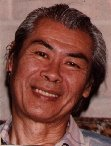
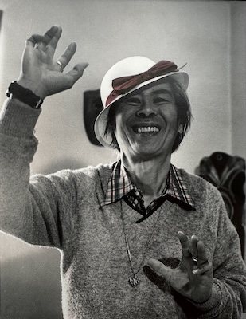

Swami Nityananda Saraswati, the Rev. Adano Ley
… to the Adano Ley website. If you do not already know about Adano, you might want to read the Adano Biography below first, then explore some Adano quotes, the Photo Gallery, and Video / Audio Recordings. These pages have some nice surprises and some places where you can get other perspectives on the Inscrutable Swami!!!

Adano also has a Facebook page. If you have any stories, pictures, or other Adano material you would like added to this web page, we would love to hear from you, please email us at: adano (-at-) adanoley (-dot-) com
NOTE: With all the unusual weather patterns around the globe lately, it came to us that Adano has a particular chant regarding the Elementals: Air, Fire, Water, and Earth. You might recognize the tune and the words are so beautiful.
We love you, we love you, we love you. Our dear Elementals we do.
All Beings of Air, Fire, and Water, and Beings of Earth we love you.
I AM Presence, free all Elementals the great, the small.
I AM Presence, through them give protection to all.
(Repeat 5 times)
We all might want to consider singing this regularly until conditions improve. Here is a link to Adano singing The Elemental Song (or MP3).
For people interested in Solar Nutrition, here are links to Adano’s basic Solar Nutrition guidelines and food lists broken down into Morning, Afternoon, and Evening foods). It is wonderful that the work of Adano Ley is being disseminated. However, in the area of Solar Nutrition where several books and websites exist, there are occasionally omissions and incorrect information. Please feel free to email us at the address above if you have questions about Adano or Solar Nutrition.
URGENT NOTE IF YOU HAVE ADANO AUDIO OR VIDEO TAPES - We just received four more Adano tapes from Colorado. One of the tapes is over 40 years old! When it was run through the tape player, it broke. Most people would have just thrown that tape away, but it was possible to splice and save it. Some tapes have jammed in their warped casings after sitting in a hot car, some have been a jumbled mess after “spilling” into somebody’s tape player - we have saved them all. So please, please, please, if you have Adano tapes laying around, don’t let them deteriorate any further, at some point, it won’t be possible to save them. We have transferred and archived over 500 hours of Adano’s materials and will transfer your tapes to MP3 (or CD) using professional equipment and send you back the digital version at no charge including the entire archive of Adano Audio and Video. EVEN IF YOU DO NOT HAVE ANY TAPES, if you are interested in the entire archive, that is possible too. Contact us first for details on where to send a 64 GB USB flash drive (aka thumb drive). Finally, another wonderful website devoted to Adano information is LongevityCircuit.com.
Swami Nityananda Saraswati, the Rev. Adano Ley, N.D. was originally from British Guiana, now Guyana, South America. Adano was born on December 9th, the 7th child of 10 near Georgetown, British Guiana. His parents were prosperous traders in raw materials and operated a general store in the village that his grandfather had helped to build out of the jungle when the British were opening that territory. At first in training to become a catholic priest, he was told that he was too much of a mystic to become a priest. (Adano told me that this problem came to a head when he asked the parish priest who was teaching him why all the books about the saints were not available to be read by everyone, whereupon his mentor replied that that information was not taught to the general church body, but rather the catechism was taught, and that he (Adano) was a mystic. Adano said he went home in tears, and told his father that he was a misfit!) So at the ripe old age of 7 (!) Adano was apprenticed to a tailor since his father insisted that if Adano did not want to go to school (Adano said, “They can’t teach me what I need to learn”), then he would have to work! As luck would have it (Good Karma?) the tailor was from India and had an extensive library of the world’s religions from which Adano was freely able to draw. Adano’s father had a guru who foretold his life in America (“He will go to the Red Man’s Land”) so upon completion of his early studies, at the age of 15 he was given his father’s inheritance and moved to the United States. He went to work as a technician with the RCA Company in New York City, making his home with relatives. Later he went to Canada to be on his own, eventually opening 2 restaurants in Montreal. (I once asked him, “Well, where did you learn to speak French?” And he told me he would go to the same restaurant every day to eat and point to something on the menu and ask what it was until he learned enough to get by!) While living in Canada, he served as director of the Self-Realization Meditation Center in Montreal. In this position he taught Yoga and meditation classes for a number of years, under the guidance of the great master, Paramahansa Yogananda. In 1955 Adano fell off the roof of a building and as he was falling, he was given the opportunity to choose death and rebirth or to remain in the body in a life of service. Consequently he was hospitalized and in a body cast for a year and 9 months as a result of some 90 broken bones. During that time he went through many spiritual tests which culminated in his decision to travel for 7 years to follow the spiritual disciplines indicated in the first 10 Chapters of Matthew. This led to extensive on-site research on the prayer and healing techniques of the North American and Canadian Indians. He also spent time in Mexico with the Mayan and Aztec people, working in these areas of study. He was eventually made a blood brother of 2 American Indian tribes. In 1969, Adano received the title of Swami Nityananda Saraswati. This event took place at Southern Methodist University in Dallas, Texas. Swami Ananda Saraswati, of New Delhi, India, who was one of Mahatma Gandhi’s foremost aides in the movement for India’s independence, performed the ceremony and ordained him Swami Nityananda of the Saraswati Order. The Saraswati is an ancient Yogic order, and the name indicates a spiritual path through knowledge and wisdom. Nityananda means spiritual attainment through mastery of the fundamentals of truth. (Adano had meditated 8 hours daily for 21 years and had spent 5 years in solitary yogic retreat in the Mojave Desert of California before receiving the honor.) At least once during a Satsang, Adano revealed that “Nitya” actually means The Void, or Nothing, and that “ananda” means bliss. Consequently he often spoke about “ever new Joy” as being the mark of a spiritual person. It is also how he got his name, Swami Nitty Gritty! Also in 1971 Adano founded the All Faith Fellowship in Tyler, Texas. A non-profit, non-denominational group studying the laws of life and soul growth, the ashram attracted devotees from all over the country to study and meditate. Many of Adano’s students were trained as therapists during this time. While continuing his work and teaching Yoga and metaphysics, as well as lecturing around the country, Adano also acquired an N.D. degree and was a licensed naturopathic physician as well as an acupuncturist and acupressure therapist. He was the Teacher and director of the Adano Ley Clinic, a center in Houston, Texas devoted to disseminating holistic preventive health therapies and instruction in self-transformation techniques. It is here that so many who could not find help through traditional avenues found their way to health. Adano’s motto was, “Live to Live, don’t live to die.” The clinic was open to anybody who needed help for many years until Adano made his Mahasamadhi on October 11, 1989.
